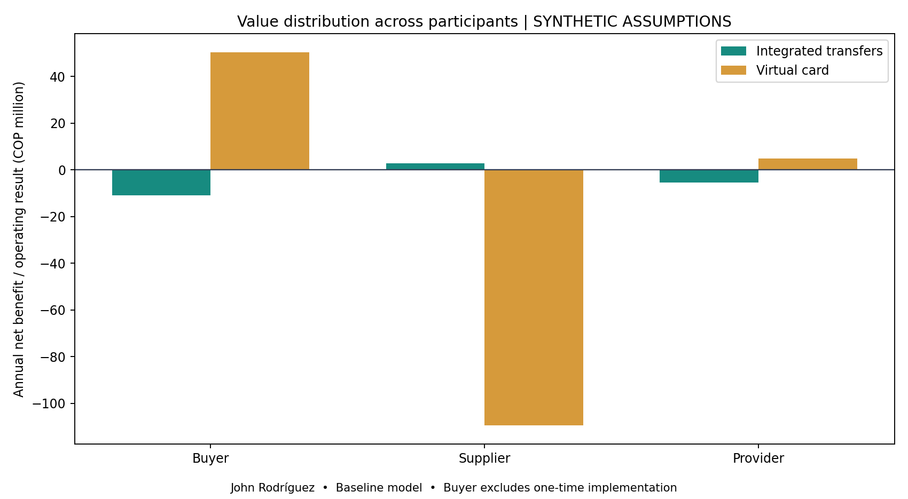
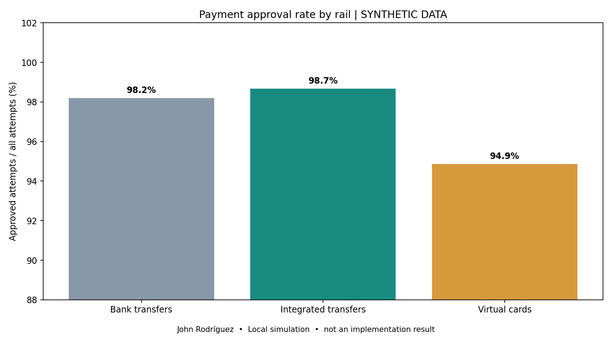

El comprador puede ganar mientras el proveedor pierde.
Buyers can benefit while suppliers lose out.
En el escenario de tarjeta virtual, el beneficio recurrente del comprador es positivo, pero las comisiones de aceptación superan los beneficios de los proveedores. No hay un caso de adopción sostenible sin renegociación.
Under the virtual-card scenario, buyer economics look positive, yet supplier acceptance fees exceed supplier benefits. There is no balanced rollout without renegotiation.

Tres perspectivas, una decisión.
Three perspectives. One decision.
| Participante | Party | Transferencias integradas | Integrated transfers | Tarjeta virtual | Virtual cards |
|---|---|---|---|---|---|
| Comprador | Buyer | −11.02m | +50.21m | ||
| Proveedores | Suppliers | +2.87m | −109.42m | ||
| Prestador | Provider | −5.58m | +4.80m |
COP millones/año. Resultados recurrentes del escenario base con parámetros inventados y editables. No incluyen necesariamente gastos iniciales en la misma métrica.
COP million/year. Illustrative recurring base-case results using editable assumptions, not actual negotiated prices.
Del flujo de dinero a la conciliación
From money movement to reconciliation
Los actores dependen del rail: una transferencia no requiere adquirente ni red de tarjetas. Autorización, liquidación y conciliación son eventos distintos. Extender el plazo de pago del comprador no equivale a liquidar más rápido al proveedor.
The actors depend on the rail: transfers do not require a card acquirer or network. Authorization, settlement and reconciliation are distinct events. Longer buyer credit terms do not automatically follow from faster supplier settlement.

Este gráfico es una simulación local de eventos; NO son métricas de una implementación real.
This graph uses local synthetic event data, NOT observed implementation metrics.
Propuesta comercial y piloto
Commercial proposal and pilot
1. Diagnosticar
1. Discover
Costear procesos, segmentar proveedores y mapear conciliación.
Cost processes, segment suppliers, map invoice reconciliation.
2. Negociar
2. Negotiate
Elegir rail según aceptación, costos y beneficio neto real de las partes.
Select rails based on acceptance, costs and participant economics.
3. Validar
3. Validate
Piloto de 90 días con criterios previos de continuidad, renegociación y detención.
A 90-day pilot with explicit go, rework and stop criteria.
Modelo, datos y método
Model, data and method
Un trabajo independiente y reproducible. Las empresas, los pagos y las tarifas son supuestos sintéticos. No se ejecutaron cobros con Rapyd ni se validó disponibilidad comercial de tarjetas virtuales B2B en Colombia.
Independent and reproducible work. Company, payments and pricing are synthetic assumptions. No Rapyd sandbox payment was executed and local commercial availability of virtual cards was not established.
Visa: developer.visa.com/docs/vpa · Mastercard: Mastercard In Control · Banco de la República: Bre-B · Rapyd: Sandbox documentation